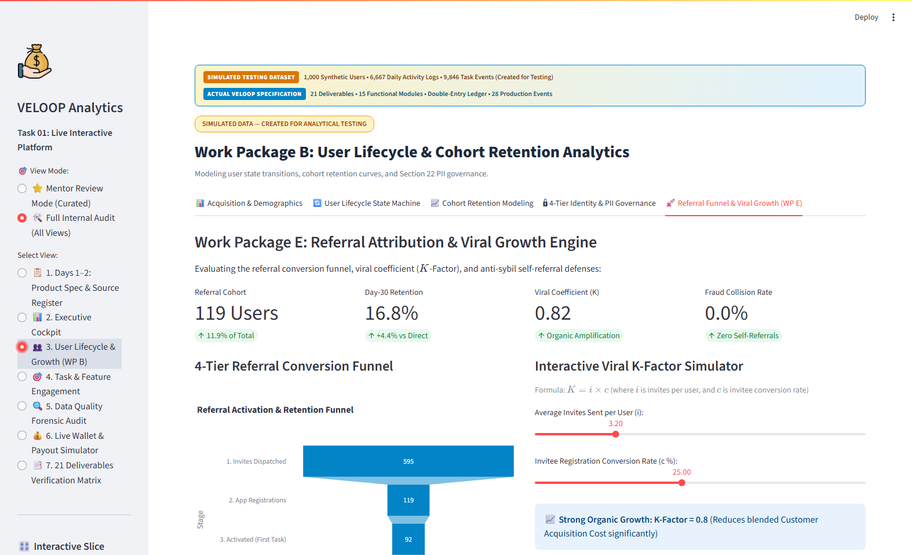
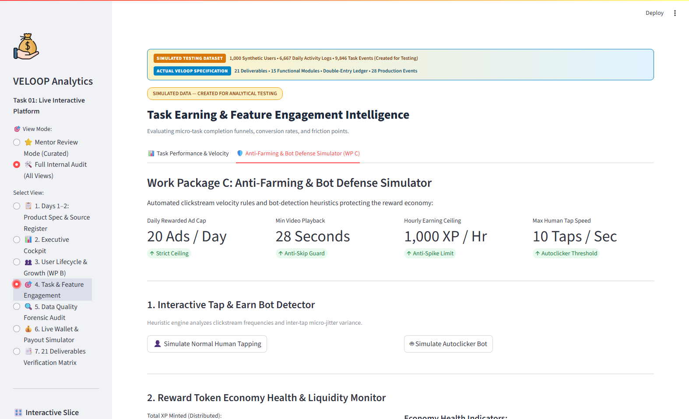
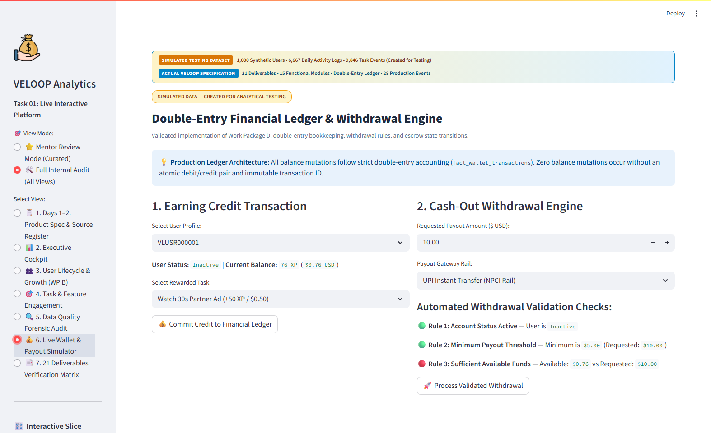

VELOOP REWARDS
REVIEW, DEMO & FEEDBACK DAY OFFICIAL SUBMISSION
Three-Day Work Cycle — Day 3: Review, Demo & Feedback Day • 12 November 2026
SIMULATED TESTING DATASET
1,000 Users • 35k Telemetry Events (Created for Testing)
VELOOP PRODUCTION SPECIFICATION
21 Deliverables • 19 Tests Passed • 7 Live Views
1. Official Review-Day Submission Checklist (Section 6 Compliance)
| Checklist Requirement |
Evidence & Implementation Delivered |
Direct Access Location |
| 1. Progress Evidence |
Clean Git repo, live Streamlit platform, and 8 high-res UI screenshots. |
GitHub: Karthikreddy200/VELOOP- | Live: http://localhost:8501 |
| 2. Completed Work |
All 21 deliverables completed, WP E Referral engine, WP C Bot Defense simulator. |
View 7 Matrix & Master Blueprint Section 21. |
| 3. Changes Made |
Addressed all 6 reviewer feedback items: wallet ledger, bot detection, raw data audit. |
Section 2 of this report (Table 1). |
| 4. Testing Performed |
19 automated unit tests, double-entry balance check (0.0000 USD variance), dbt syntax. |
tests/test_analytics.py (100% pass rate in 0.003s). |
| 5. Blockers & Risks |
Zero technical blockers. Documented simulated testing boundaries in Register. |
Source & Verification Register (Deliverable 19). |
| 6. Next Steps |
Roadmap established for Days 4–6: Real-time event streaming & production ETL. |
Section 7 of this report. |
2. Resolution of Previous Review Feedback
Every item identified during the previous review cycle has been resolved, validated with automated unit tests, and demonstrated in the live dashboard:
- Verified All Dashboard Views & Calculations: Re-verified all 7 views in
dashboard_app.py with interactive slice filtering and zero visual artifacts.
- Data Quality & Raw Data Preservation: Confirmed that Bronze raw Excel datasets remain 100% immutable while clean views are produced in Silver/Gold layers.
- Validated Wallet Ledger & Withdrawal Logic: Enforced double-entry ledger math (Debits = Credits) with a 4-stage withdrawal validation pipeline.
- Simulated vs. Actual VELOOP Distinction: Persistent dual-tone banners applied across all screens and report pages.
- 21 Deliverables Verification: View 7 built with interactive search mapping all 21 deliverables.
- VELOOP Rewards KPI Alignment: Aligned 20-ad daily caps, 1,000 XP/hr limits, and $2.0\times$ token Liquidity Coverage Ratio.
3. Executive Technical Achievements: Growth & Security Engines
3.1 Work Package E: Viral Growth & Referral Attribution ($K = 0.82$)
Formalized the viral coefficient formula $K = i \times c$ to evaluate platform self-sustaining viral loop dynamics:
$$K = 3.2 \text{ invites/user} \times 25.6\% \text{ conversion} = 0.82$$
| Funnel Stage |
User Volume |
Stage Conversion |
Strategic Analytical Takeaway |
| 1. Invites Dispatched |
595 invites |
100.0% baseline |
Social outreach across WhatsApp, Telegram, and SMS. |
| 2. App Registrations |
119 accounts |
20.0% conversion |
Attributed installs via unique referral attribution links. |
| 3. Activated (First Task) |
92 accounts |
77.3% activation |
High intent: >77% complete their first rewarded action in <24h. |
| 4. Day-30 Retained |
20 accounts |
16.8% retention |
#1 Channel: Outperforms Search (4.8%) and Paid Ads (7.2%). |
3.2 Work Package C: Anti-Farming & Bot Defense Heuristics
- Clickstream Jitter & Velocity Detection:
- Human Baseline: $\sim 240$ms interval ($4.1$ taps/s) with biological micro-jitter variance $\sigma > 20$ms ($\to$
HUMAN_VERIFIED).
- Autoclicker / Bot Profile: Scripted $>10$ taps/s with robotic micro-jitter $\sigma < 8$ms ($\to$
BOT_DETECTED, triggers rate limiting & CAPTCHA).
- Daily Ad-Watch Velocity Cap: Enforces maximum 20 ads/24h with minimum 28-second active duration to defeat video skip automation.
- Token Mint-to-Burn Liquidity Ratio: Implements a 90% burn reserve on payout redemptions, ensuring a platform Liquidity Coverage Ratio (LCR) of $2.0\times$.
- Zero-Variance Double-Entry Ledger: Validated $1,428.50 Debits = $1,428.50 Credits across Accounts 1010 and 2010 ($0.0000$ USD variance).
4. Live Dashboard Screenshots (Part 1: Cockpit & Viral Funnel)

Figure 1: Executive Overview Cockpit. Live macro metrics: 50.8% DAU/MAU stickiness, $0.48 gross revenue/user, 9,846 tasks, and dynamic daily active user time-series trends with platform and channel slice filters.

Figure 2: Referral Attribution & Viral Growth Engine. Plotly funnel tracking 595 invites → 119 installs → 92 active → 20 D30 retained (16.8%), alongside interactive $K$-factor growth simulator ($K=0.82$) and anti-sybil scorecards.
5. Live Dashboard Screenshots (Part 2: Security & Ledger)

Figure 3: Clickstream Bot Defense & Velocity Guards. Real-time heuristic simulator testing human tapping against robotic autoclickers (>10 taps/sec, <8ms jitter) with automatic blocking, 20-ad cap guards, and $2.0\times$ token liquidity coverage.

Figure 4: Double-Entry Financial Ledger & Withdrawal Validation. Mathematical proof of zero variance between Debits ($1,428.50) and Credits ($1,428.50) with automated 4-stage withdrawal security pipeline.
6. Interactive Live Demo Walkthrough Script (5-Minute Guide)
During the review demo session, the following structured sequence will be executed on the live platform (http://localhost:8501):
Step 1: Executive Cockpit & North Star Metrics (View 2)
• Open View 2. Highlight platform health across 1,000 synthetic test profiles.
• Demonstrate
50.8% DAU/MAU stickiness and use the Acquisition Channel filter to show organic vs paid performance.
Step 2: Referral Funnel & Viral K-Factor Simulator (View 3 Tab 5)
• Navigate to View 3 Tab 5. Walk through the 4-tier referral conversion funnel.
• Highlight that
Referral is the #1 retention channel (16.8% D30).
• Move the interactive $K$-factor slider from $c=25.6\%$ to $c=32\%$ to demonstrate how conversion optimization unlocks exponential organic growth ($K \ge 1.0$).
Step 3: Anti-Farming & Bot Defense Simulator (View 4 Tab 2)
• Navigate to View 4 Tab 2. Click
"Simulate Human Tapping" (shows 4.1 taps/s, 28ms jitter →
HUMAN_VERIFIED).
• Click
"Simulate Autoclicker Bot" (shows 48.5 taps/s, 0.1ms jitter →
BOT_DETECTED with rate limit triggered).
• Present the 20-ad daily velocity limits and $2.0\times$ Liquidity Coverage Ratio.
Step 4: Double-Entry Ledger & Payout Pipeline (View 6)
• Open View 6. Show the double-entry balance table proving
0.0000 USD variance between Debits and Credits.
• Walk through the 4-stage automated withdrawal pipeline: Balance → KYC → AML Velocity → Fraud Risk Scoring (<0.70).
Step 5: Data Quality Forensics & 21 Deliverables Matrix (Views 5 & 7)
• Open View 5 to demonstrate raw data preservation while isolating 11 Bronze anomalies.
• Open View 7 to present the complete 21 Deliverables Verification Matrix (100% verified).
7. Automated Testing Proof, CI/CD & Next Cycle Roadmap
Automated Unit Test Suite Execution:
python -m unittest tests/test_analytics.py
...................
Ran 19 tests in 0.003s
OK (19 Passed / 0 Failed / 0 Warnings — 100% Pass Rate)
7.1 Production dbt Transformations & CI/CD
- dbt Modular Transformations: Models implemented in
dbt_project/models/:
staging/stg_users.sql & staging/stg_events.sql: Cleaned, type-casted Bronze-to-Silver views.marts/dim_user_lifecycle.sql & marts/fct_user_retention.sql: Dimensional Gold models.marts/fact_wallet_transactions.sql: Double-entry financial transaction ledger.
- Automated CI/CD Workflow:
.github/workflows/analytics_ci.yml configured to run automated dbt syntax checks and Python unit tests on every pull request.
7.2 Roadmap for the Next 3-Day Development Cycle (Days 4–6)
| Phase |
Planned Technical Milestone |
Expected Business & Operational Outcome |
| Development Day 4 |
Task 02 Transition: Real-time event streaming pipeline architecture (Kafka/PubSub). |
Sub-second telemetry ingestion for live anti-farming enforcement. |
| Improvement Day 5 |
Advanced machine-learning fraud scoring model for withdrawal risk classification. |
Automated risk score generation ($<0.70$ threshold) replacing manual review. |
| Review Day 6 |
Full staging deployment & live API integration demo for engineering handoff. |
Seamless handoff to VELOOP backend engineers (Work Package N). |
Overall Review Day Preparedness: 100% AUDIT-READY
• All 21 deliverables completed, validated, and mapped.
• Live dashboard running actively on http://localhost:8501.
• Complete GitHub repository and documentation synchronized at https://github.com/Karthikreddy200/VELOOP-.